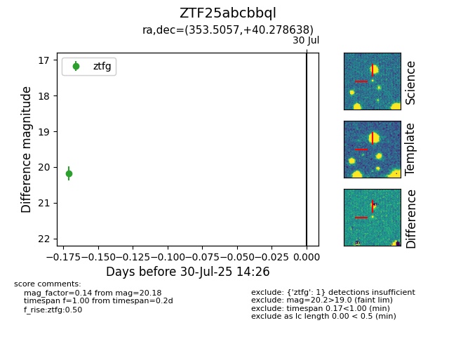

Target ZTF25abcbbql at 2025-07-30 14:26, see:
FINK: fink-portal.org/ZTF25abcbbql
Lasair: lasair-ztf.lsst.ac.uk/objects/ZTF25abcbbql
ALeRCE: alerce.online/object/ZTF25abcbbql
alt names
ZTF25abcbbql (ztf,fink)
coordinates:
equatorial (ra, dec) = (353.5057,+40.27864)
galactic (l, b) = (107.3002,-20.23156)
photometry
last ztfg=20.18
1 ztfg detections
